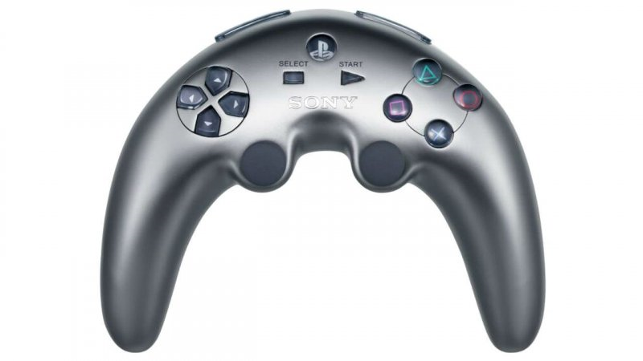
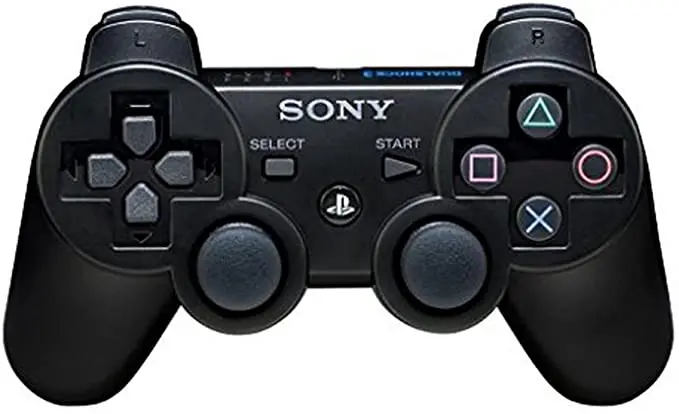

O PlayStation 3 fez sua estreia nos Estados Unidos e no Japão em 11 de novembro de 2006. O aparelho foi anunciado em duas versões durante uma apresentação desastrosa da Sony na E3 de 2005: a primeira variante tinha disco rígido de 20 GB e custava US$ 499; já a segunda, tinha 60 GB e custava US$ 599. Além disso, o PS3 foi anunciado com um controle em formato de boomerang, que recebeu duras críticas dos fãs e da mídia especializada na época. Neste aspecto, a empresa retrocedeu para uma versão chamada SixAxis, que acompanhava os primeiros modelos do console, mas reformulou o hardware em 2007 para o DualShock 3, atual controle (adicionando a opção de vibração).

Durante a revelação do PlayStation 3 na E3 2005, os fãs foram surpreendidos com o design do controle, este apelidado de “bumerangue” (por se parecer com o objeto). O dispositivo, no entanto, nunca foi lançado oficialmente e sequer recebeu foco na apresentação do videogame. Eventualmente, a Sony comentou que precisava apenas de um controle para acompanhar o PS3 em sua revelação. Por isso, levou o “bumerangue” para a E3.

O Sixaxis foi o primeiro controle sem fios oficial da história do PlayStation. Além disso, o modelo era capaz de detectar movimentos com “seis eixos de distância”. Por outro lado, por causa deste mesmo detector e da bateria interna, o controle veio sem a função vibratória. Outra mudança estava nos “L3” e “R3”, agora mais sensíveis. Além disso, o antigo “Analog” acabou removido e em seu lugar foi implementado o botão “PS”, que abria o menu inicial do console. Por não ter fio (conectado via bluetooth), o aparelho precisava ser carregado eventualmente.

Em 2007, a Sony anunciou o lançamento do DualShock 3 na Tokyo Game Show. O joystick substituiria o Sixaxis e traria de volta um velho amigo: o feedback háptico, também conhecido como a função vibratória. Graças aos motores de vibração, o controle era 40% mais pesado que seu antecessor. Fora isso, não houveram outras novidades. Anunciado no Tokyo Game Show de 2007, o controle sem fio DualShock 3 (SCPH-98050/CECHZC2) é um gamepad para o PlayStation 3. Ele substitui o controlador sem fio Sixaxis lançado originalmente com versões anteriores do console. O DualShock 3 é quase idêntico à versão Sixaxis anterior, mas adiciona os recursos de feedback tátil. Diferente dos controladores anteriores da Sony, o DualShock 3 pode se conectar a dispositivos usando Bluetooth e possui uma bateria interna, para que você possa usá-lo sem cabo.
